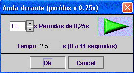
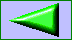
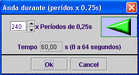
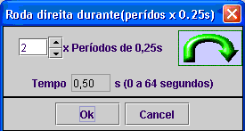

Existem quatro blocos com movimentos predefinidos:
Bloco para o robot seguir em frente durante x períodos *0,25s

Bloco para o robot seguir em "marcha atrás" durante x períodos *0,25s


Bloco para o robot girar à direita durante x períodos*0,25s


Bloco para o robot girar à esquerda durante x períodos*0,25s